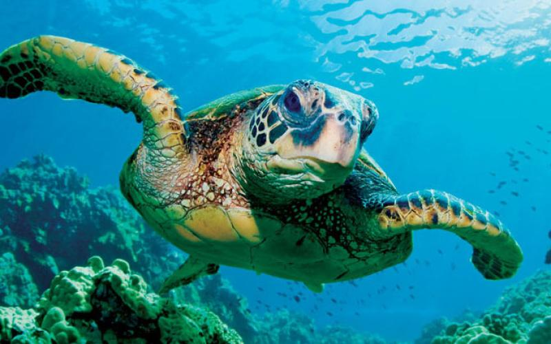

<a href="https://github.com/AlbertoFormaggio1/turtle-head-detection" class="fill-div nostyle">
    <div class="row mb-5 project-box pb-3">

        <div class="col-12">
            <h6 class="txt-primary mt-4">Sea Turtle Face Detection for Ocean Conservation</h6>
        </div>
        <div class="col-12 col-md-4">
            
        </div>
        <div class="col-12 col-md-8">
            <div class="row mb-3">
                <div class="col-12">
                    Object detection of turtles' heads with RetinaNet algorithm.
                    Category 14 of the Sustainable Development Goals defined by the United Nations: Life Below Water.
                    Achieved 0.878 IoU score.
                    Developed with Tensorflow, Pandas, Python.
                </div>
            </div>
            <div class="row">
                <div class="col-12">
                    <ul class="mt-2 d-flex flex-wrap no-style-list">
                        <li class="mt-2 mr-2">
                            <div class="txt-primary d-flex align-items-center skill-object px-3 py-1">Object Detection</div>
                        </li>
                        <li class="mt-2 mr-2">
                            <div class="txt-primary d-flex align-items-center skill-object px-3 py-1">Computer Vision</div>
                        </li>
                    </ul>
                </div>
            </div>
        </div>
    </div>
</a>